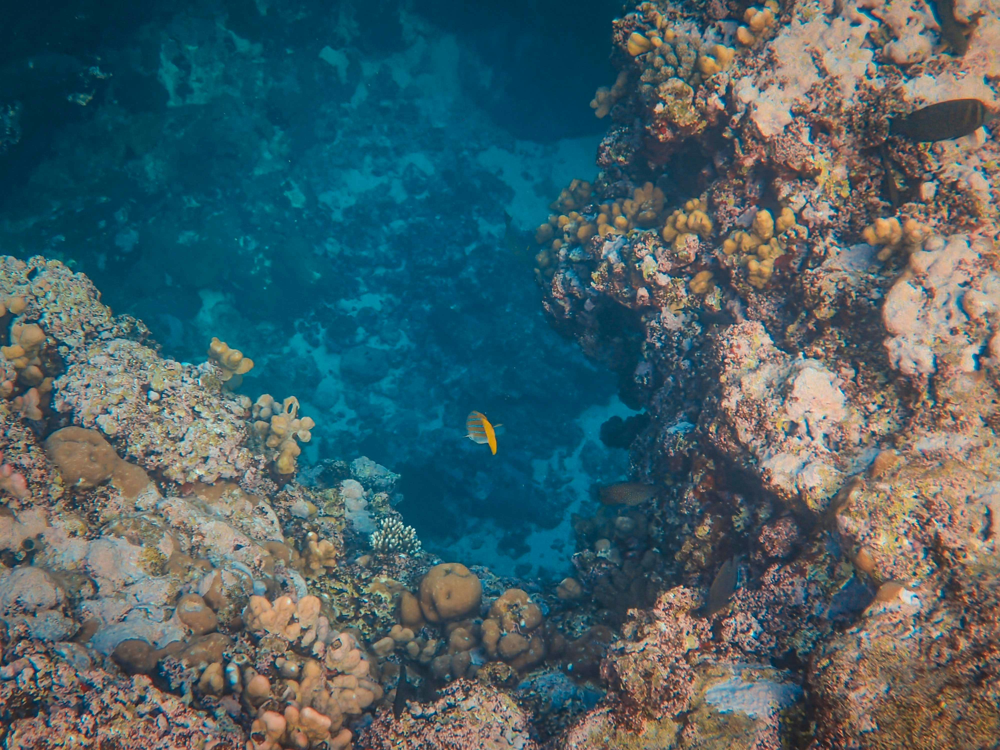
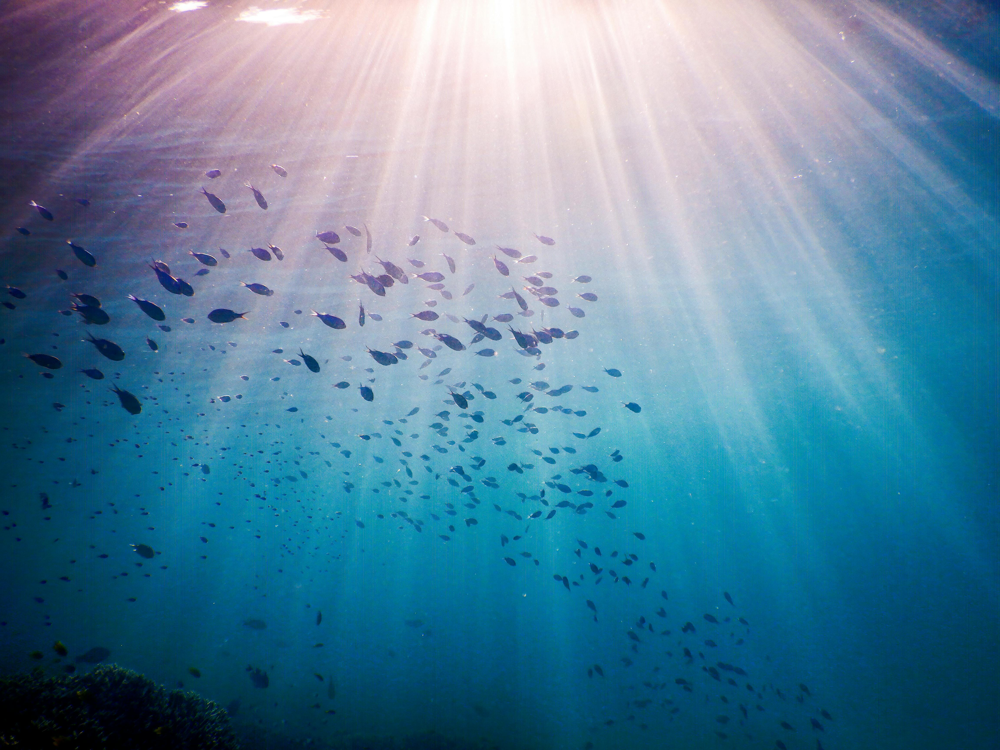

海之基——万物缘起
Live of ocean
从微小的藻类在阳光下吐露第一口氧气，到五彩斑斓的珊瑚礁筑起海底的繁华城邦。他们是海洋中最沉默的基石，却孕育了最璀璨的生命交响。

Crisis
然而，这份深沉正在悲泣。白化的珊瑚如枯骨，塑料的漩涡窒息了波浪。温室的余热正在改变洋流的步调。深渊的危机，亦是人类的危机。

湛蓝如梦，渊深不言 . 请随潮水，聆听海洋的呼吸。

从微小的藻类在阳光下吐露第一口氧气，到五彩斑斓的珊瑚礁筑起海底的繁华城邦。他们是海洋中最沉默的基石，却孕育了最璀璨的生命交响。

然而，这份深沉正在悲泣。白化的珊瑚如枯骨，塑料的漩涡窒息了波浪。温室的余热正在改变洋流的步调。深渊的危机，亦是人类的危机。
预测模型与气候连锁反应分析...
关于碳固存效率的重新评估...
在世界的某一处海岸，您曾留下怎样的波光？
悬停于积雨云上，聆听是从哪个大洋升腾的叹息。（体验版）